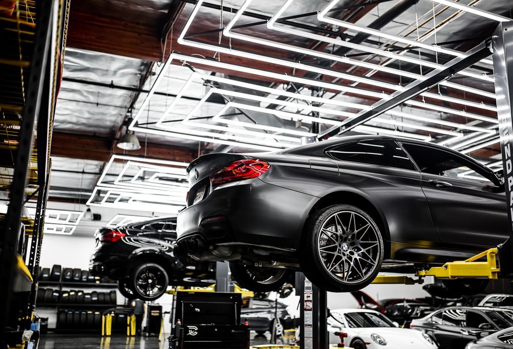
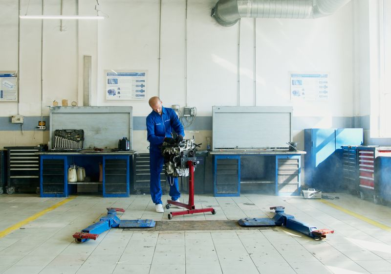

Foto di esempio
Via Trento 2 · Messina
Officina meccanica ed elettrauto a Messina.
Meccanica generale ed elettrauto. Ci racconti il problema, scegli un giorno e invii la richiesta: l'officina ti richiama per confermare.
Cosa facciamo
Tocca un intervento per sceglierlo: ti portiamo al modulo con il servizio già selezionato. Costi: [prezzo] o su preventivo.
Impianti e assistenza

Elenco indicativo, dai temi delle recensioni e dalla categoria Google; nessun listino online. L'officina conferma cosa può seguire.
Richiedi un intervento
Come funziona: 1) ci dici veicolo e problema · 2) scegli un giorno · 3) invii la richiesta e parte la chiamata verso l'officina con i dati pronti da leggere. Niente viene inviato da solo. L'officina richiama per confermare giorno e ora.
Orari
- Lunedì–Sabato8:00–20:15
- DomenicaChiuso
Perché questa pagina
Merlino Racing oggi non ha un sito: su Google si trovano scheda, recensioni (5,0 su 78) e numero, ma non una pagina che spieghi cosa fa l'officina né un modo per inviare una richiesta senza chiamare a freddo.
Questa è una proposta di sito-vetrina a pagina singola: servizi, una richiesta di intervento che apre la chiamata con i dati pronti, orari e mappa. Le foto sono esempi (Pexels), non l'officina di Merlino Racing.